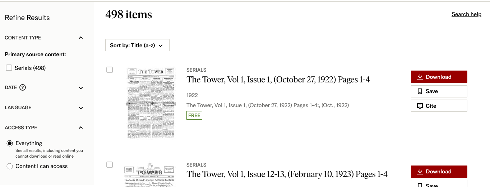

Dylan Orshefsky
LSC 555
Assn. 2
| Input | Output |
|---|---|
| Click collection image (organized by two decades) | Redirect to page w/ list of collection items as individual issues |
| Keyword search | Redirect to search page, list of collection items sorted by relevance |
| Input range into DATE filter | Same page, list collection items by title, only w/in range |
| Click Catholic University badge | Redirect to University page w/in JSTOR, showing list of collections |
This collection matched a lot of my expectations around how this kind of information could be displayed and accessed.
Search results were well organized and intelligible, and things like filters and keyword entry were located in findable places.
The large thumbnails, showing the front page of each issue item was a smart piece of aesthetic design that was immediately recognizable.

Entering a misspelled term (such as “vienam” instead of “vietnam”) did yield a suggestion for the desired term (Error Prevention).
Sorting options made sense and conformed to desires and expectations (match between system and real world).
Navigation was simple, including going “back” pages. One small note on visibility of system status: the in-document keyword search displayed
“No results found” while still searching, only to be updated once it's done scanning the document, which is not ideal.
See attached.
The results of the heuristic test were not very surprising to me. My tester noticed the same benefits that I did towards browsing, but also
found the search features to be lacking and sometimes frustrating. Even though the overall user interface was built with the same kind of pieces
as other similar systems, specific details of the implementation made it harder to use than they had expected. Overall, the struggle took place
more because of the specific nature of the collection's content, and how it had been indexed, rather than the overall sytem lacking the necessary tools.